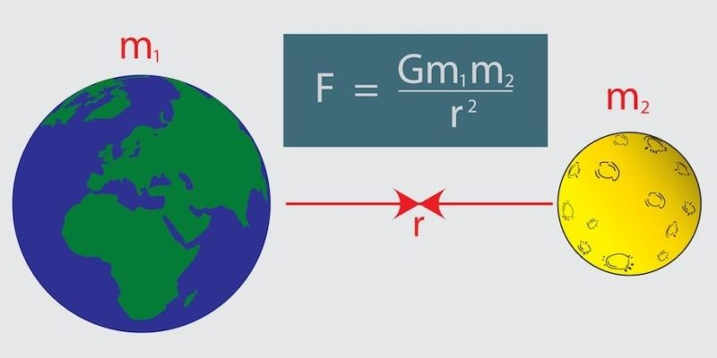
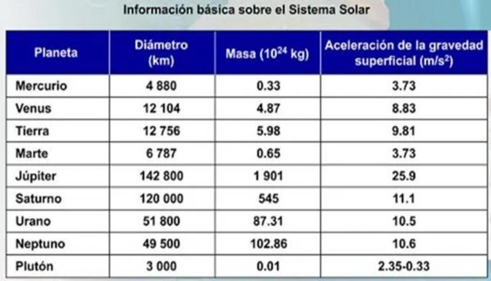

La ley de la gravitación universal fue propuesta en el año de 1687 y formalmente dice lo siguiente:
“La fuerza con que se atraen dos objetos es proporcional al producto de sus masas e inversamente proporcional al cuadrado de la distancia que los separa”.
Para formular esta ley, Newton dedujo que la fuerza con que dos masas se atraen es proporcional al producto de sus masas dividido por la distancia que las separa al cuadrado. Esta ley implica que, mientras más cerca y grandes sean dos cuerpos, más se atraerán entre sí.
Por ejemplo, la Tierra tiene una masa muy grande y los seres humanos una masa pequeña, por esa razón somos atraídos a ella, y no nos caemos o salimos volando al espacio, pues al ser dos objetos con masa, somos atraídos mutuamente.
Esto quiere decir que cada objeto tiene una fuerza de atracción llamada fuerza gravitatoria, no importa que objeto sea, todos tenemos masa y por lo tanto, todos nos atraemos mutuamente.
La fuerza de atracción depende de la masa del objeto y de la distancia en que se encuentran separados. Por ese hecho, Newton en su ley propuso la siguiente fórmula, dando sentido a la ley de la gravitación universal

En donde:
F: es la fuerza de atracción gravitatoria entre dos masas, que se mide en Newtons.
G: es la constante de gravitación universal.
m1: es la masa de uno de los cuerpos, medida en kilogramos.
m2: es la masa de otro de los cuerpos, medida en kilogramos,
r: la distancia que los separa, medida en metros.
Esta ley fue formulada por Isaac Newton en su libro “Philosophiae Naturalis Principia Mathematica”, en 1687, donde estableció por primera vez una relación proporcional, deducida empíricamente de la observación, de la fuerza con que se atraen dos objetos con masa.
La constante de gravitación universal es de 6.67 x 10-11 N.m2/kg2. La ley de gravitación universal dice que la fuerza de atracción entre dos objetos depende de la distancia del centro de la masa y la masa que tienen los objetos.
En el caso de la Tierra, se calculó su radio midiendo desde su centro hasta la corteza de ésta. También se calculó su masa y, aplicando la fórmula de la ley de gravitación universal, el resultado es de 9.81m/s2. No obstante, el resultado es diferente para cada sitio de la Tierra. Por lo tanto, la gravedad en la Tierra no es la misma en cada lugar.
Por ejemplo, la gravedad que existe al nivel del mar será distinta a la que hay en el monte Everest, puesto que la altura que hay en ese monte es mayor; por lo tanto, la distancia será mayor hacia el centro de la Tierra.
Por lo anterior, para calcular la gravedad de cada astro se debe tomar la distancia del centro de éste hasta su corteza, y como cada planeta es de distinto tamaño su gravedad es diferente.
Para dar más sentido a esta teoría, debes tener en cuenta el siguiente concepto.
Peso: es la fuerza con que la Tierra atrae a un cuerpo por acción de la gravedad.
Aunque en este caso entrarían todos los planetas. Imagina que vas a la Luna, y como la Luna es más pequeña que la Tierra, la fuerza de atracción de gravedad será menor.
Pero ¿cómo será tu peso en la Luna? Si lo analizas detenidamente, podrás darte cuenta de que será menor, ya que la fórmula de gravitación universal dice que todo depende de las masas de los objetos y su distancia desde el centro de las masas. Esto quiere decir que el peso que tienes va a variar según el lugar donde te encuentres.
Los científicos han calculado la gravedad en cada astro usando la fórmula de la ley de gravitación universal. Observa la siguiente tabla:

En esta tabla puedes observar la gravedad que existe en algunos astros del sistema solar. Esta tabla fue propuesta por medio de distintos experimentos calculando el tamaño y la masa de los astros, y sacando su radio; usando la ley de la gravitación universal.
Para calcular tu peso sólo deberás utilizar la siguiente fórmula:
Donde:
W: peso, medido en newtons, pues es una fuerza
m: masa, medida en kilogramos
g: aceleración debida a la gravedad, medida en metros por segundo al cuadrado
Entonces, si deseas saber cuál es tu peso o el de alguna persona, sólo deberás multiplicar la masa por la gravedad en el astro que se seleccione.
Por ejemplo, se quieres saber tu peso en el planeta Tierra, sólo deberás multiplicar tu masa por 9.81m/s2 que es el valor de la aceleración debido a la gravedad, pero si quisieras saber tu peso en otros astros deberás cambiar el dato de la aceleración de acuerdo con la gravedad, ya que tu masa sería la misma.